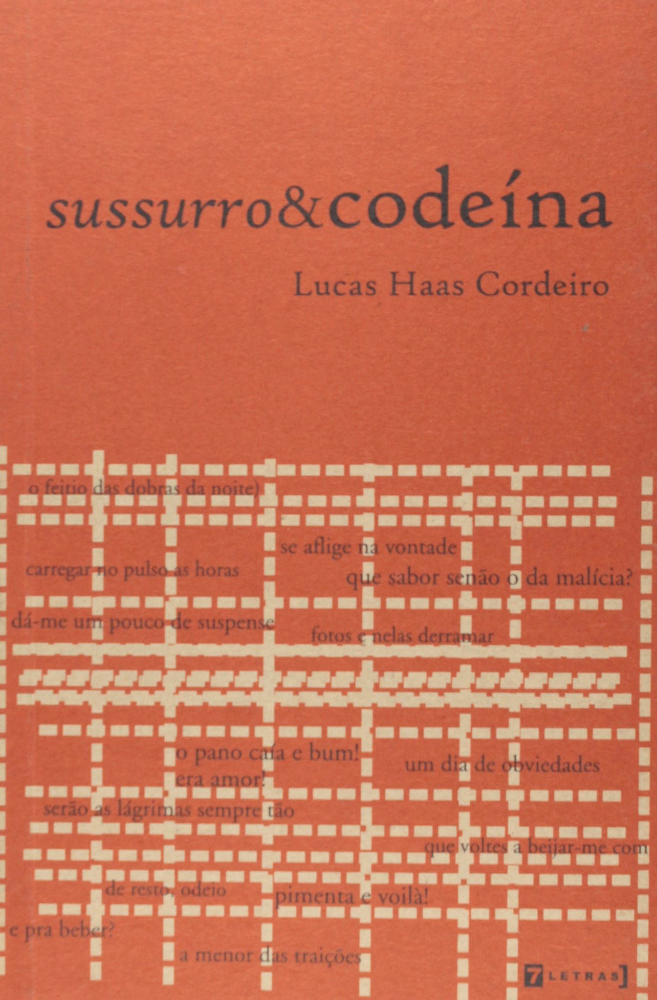

Resenha de Carlos Machado
escritor, músico e professor de literatura
A sutileza de um sussurro. A acidez da codeína. A textura da paixão mergulhada em uísque e soda cáustica. O despetalar de flores. O intuito da eternidade. Palavras que são como apaixonantes erupções de sentimentos; um poeta menor na idade e maior na poesia, que se encontra em plena ascensão rumo ao corpo: um livro que é um tapa na cara dos desavisados ou uma carícia no rosto da amada. Eis o poeta.
É com esses ingredientes que Lucas Haas Cordeiro estreia na literatura. Sussuro&Codeína é um livro que chama o leitor para bater um papo de perto, cara a cara, sem a hipocrisia de qualquer sentimento de culpa. É um toma-lá-dá-cá:
Porrada do começo ao fim. O poeta segura na mão do espectador e o empurra para dentro da ação em um só movimento: "Luzes, câmera, ação!" E a partir daí escrever se torna um "hábito maravilhoso de escarrar arte" e entrar para a história.
Com esse trabalho, Cordeiro vai ao encontro do que há de melhor na poesia contemporânea brasileira. Apóia-se na marginalidade das palavras, na moderna ênfase visual, no tumulto contemporâneo, nas múltiplas vozes, na metapoesia, no lirismo satírico, ou melhor, salírico, e atinge um soco no âmago do leitor. Um texto habilmente em movimento:
insigante: "Termino o dia com uma dúvida e uma certeza: estou apaixonado", crítico: "Associaçõe$ Financeira$ de Ensino Terceirizado Senhor Dábouiú-buchi: é o saber dos novos tempos", irônico: "cabo de vassoura que na noite é bendita companhia" e que transpira espontaneidade: "Seria aniversário, não fosse a felicidade"
Lucas Haas Cordeiro prepara seu ópio e nos oferece de bandeja, uma "poesia lírica crua mordaz picante maldizente irônica apaixonada". Deite, meu caro, esparrame-se por sobre o corpo das palavras. Caso sussurre de dor, use codeína.
